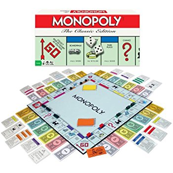
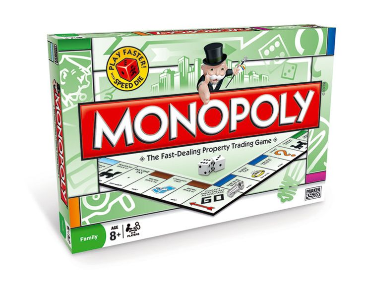

Un juego creado con la función de servir como herramienta para enseñar las teorías acerca de la justicia social y económica extraídas del estudio titulado "Progreso y Miseria" de Henry George
Comercializado por primera vez en el año 1936.
A lo largo de 80 años, el juego ha sufrido una notable evolución. Sus múltiples ediciones y sus tantas versiones han dado pie a que se cambiara desde la caja que lo contiene hasta los elementos que lo componen. Logrando así mantenerse como el favorito a través de las décadas.
Con los años la finalidad del juego cambio para solo disfrutar un buen rato, negociando propiedades y hasta haciendo uso de medios electrónicos para todas las transacciones del juego.
Con información de Gràffica.info.cultura visual